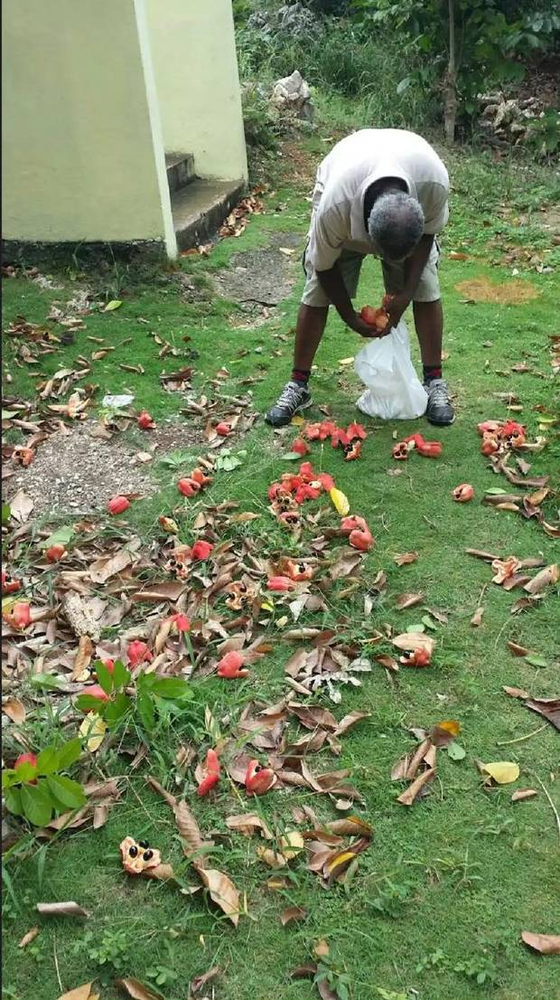
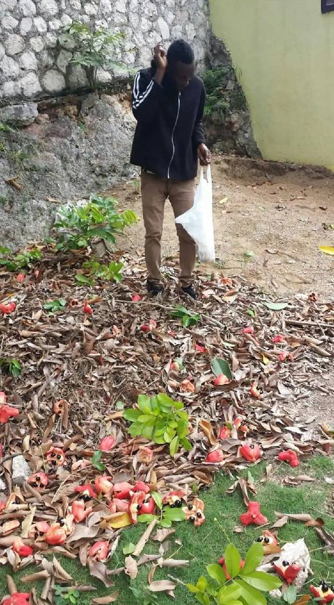

Origins
From West Africa
to the Caribbean table.
The ackee fruit (Blighia sapida) is celebrated for its unique, lively flavour and is a staple in exotic culinary traditions. Originating from West Africa and cultivated for centuries, it continues to delight worldwide. Introduced to Jamaica during the 18th-century transatlantic slave trade, ackee quickly became a Caribbean culinary symbol.
Its fragrant aroma, smooth creamy flesh, and sweet nutty flavour — reminiscent of tropical almonds — made it instantly beloved. But beyond flavour, ackee carries a rich nutritional profile including fat, protein, fibre, vitamins A, C and B-complex, and phytochemicals with antioxidant properties. Ackee is unusual among fruits in being genuinely fat rich, which is part of why it satisfies as a main dish. Published analyses of Jamaican ackee describe a fat profile led by oleic acid, the same monounsaturated fat found in olive oil.
Today, as a key ingredient in Jamaica’s national dish — ackee and saltfish — it is a staple throughout the Caribbean, found in nearly every market stall and street vendor’s stand, especially across Jamaica.
The Ripening Journey
Watch the ackee
reveal itself.
The ripening of ackee is one of nature’s most deliberate processes. The fruit moves through a visible colour transformation that signals when it is ready — and when it is not. Understanding this journey is essential. Unripe ackee is toxic. Fully ripe ackee is a nutritional powerhouse.
When fully ripe, the fruit displays three large, shiny black seeds (and sometimes a fourth, hidden inside) surrounded by soft, spongy, edible arils — the fruit’s pulp — with a creamy texture and mild, savoury flavour. These arils are used in various culinary styles across the Caribbean.
Nutritional Profile
What ackee
delivers to the body.
Ackee is highly nutritious, rich in vitamins, minerals, and bioactive compounds that contribute to a nutritious diet. Its nutritional range is exceptional for a tropical fruit.
Health Benefits
A superfruit
for the whole body.
Ackee is a nourishing food that has fed Jamaican families for generations. It is honest to say that very little clinical research has been done on ackee itself, far less than on foods such as garlic or oats. What follows is what ackee contains, and what those nutrients do in the body generally. It is not a list of proven effects of eating ackee.
Enhanced digestion
Rich in dietary fibre, ackee promotes healthy gastrointestinal function. Its high fibre content helps ease constipation and reduces bloating, cramps, and colon inflammation.
Blood pressure regulation
Ackee contains potassium, as most fruits and vegetables do. We have not published a figure, because ackee is not listed in USDA FoodData Central and we could not find a reliable published measurement. Diets higher in potassium and lower in salt are associated with lower blood pressure, but that is a whole diet effect and no single food lowers blood pressure on its own. If you are watching your blood pressure, the bigger lever in a plate of ackee and saltfish is the salt in the saltfish.
Energy & vitality
The B-complex vitamins in ackee drive energy metabolism at the cellular level — converting food into usable fuel. This is sustained energy, not the spike-and-crash of refined carbohydrates.
Immune strength
Vitamins A and C, combined with zinc and flavonoids, provide a comprehensive immune support profile. Ackee strengthens the body’s defences at multiple levels simultaneously.
Bone health
Magnesium, phosphorus, and calcium work together to support bone density and tooth strength. Essential for long-term skeletal health across all age groups.
Safety First
Important:
preparation matters.
Ackee contains hypoglycin A and hypoglycin B. These are not ordinary plant compounds. They are toxic amino acids, they dissolve in water, and ordinary cooking does not reliably destroy them. In unripe fruit the levels are dangerous throughout. As the pod opens naturally on the tree, hypoglycin A in the edible aril falls from around 711mg per 100g to below the limit of detection. It does not disappear from the rest of the fruit. The seeds stay high, around 269mg per 100g even when fully ripe, and the rind does not change at all. This is why ripeness alone is not enough, and why preparation matters just as much. These compounds cause Jamaican vomiting sickness, which can be fatal.
How to eat ackee safely
1. Let the pod open naturally and fully on the tree before you pick it. Never force a pod open with a knife or anything else, and never pick or buy ackee that is still closed. Colour alone is not the test. Natural, full opening is the test.
2. Eat only the cream to yellow arils. Remove and throw away the three black seeds and the pinkish or reddish membrane between the seed and the aril. Never eat the seeds, the membrane or the rind. These stay high in hypoglycin A even when the fruit is fully ripe.
3. Wash the arils thoroughly.
4. Cook the ackee before eating it, and throw the cooking water away. Do not reuse it and do not add it to anything else. Hypoglycin A dissolves into the water.
5. Cook the saltfish, ground provisions and rice separately, in their own water.
6. Take extra care when feeding children. In the Jamaican outbreak investigated by the CDC, children under 15 were affected at around five times the rate of older people, and one in five of all cases died.
If something is wrong, act immediately. The signs of ackee poisoning are vomiting, stomach cramps or abdominal pain, dizziness, diarrhoea and sweating. Get to a doctor or a hospital straight away, and take a sweet drink on the way. Do not wait to see whether it passes. Ackee poisoning can be fatal, and it is treatable when it is caught early.
Cultural Heart
Jamaica’s national dish.
A symbol of identity.
Ackee and saltfish is not just a meal. It is a cultural declaration. Widely enjoyed across the Caribbean, found at nearly every market stall, breakfast table, and family gathering across Jamaica, ackee represents the synthesis of West African heritage, Caribbean environment, and the resilience of a people who created something extraordinary from what they were given.
In Rastafarian Ital tradition, the freshness and natural preparation of ackee — cooked simply, combined with natural seasonings — embodies the principle that food is medicine, and medicine should come from the earth.
“Ackee is not just Jamaica’s national fruit. It is a living connection to West Africa, to the land, and to the generations who understood that what grows here was placed here for a reason.”
From the tree
Picking ackeein St. Andrew.


Sources
Where this
comes from.
The health claims on this page were checked against the sources below. Where a claim could not be supported it was softened or removed rather than given a citation that did not fit. This page is general information about food, not medical advice, and no food prevents or treats disease.
- Ministry of Health and Wellness, Jamaica: guidance on ackee preparation
- CDC, Toxic Hypoglycemic Syndrome, Jamaica 1989 to 1991 (MMWR)
- FDA Import Alert 21-11, ackee and hypoglycin A
- Chase GW et al, hypoglycin A in the aril, seeds and husks at various stages of ripeness
- NIH Office of Dietary Supplements, Potassium
- NIH Office of Dietary Supplements, Niacin
Ackee. Rooted in
Africa. Grown in Jamaica.
Ackee is a staple that carries protein, fat, fibre, vitamins and minerals, and it has nourished communities for centuries.
Eat it ripe. Prepare it correctly. Understand what it gives the body. That is the Kwik Fat Cut way. 🇯🇲
Kwik Fat Cut — Foods Hub — Education First